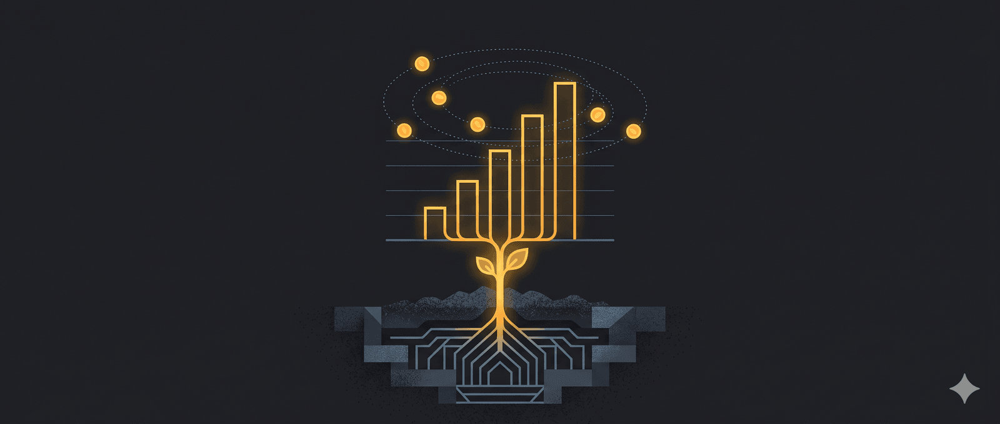

Hôm nọ, mình đi ăn tối với hai người bạn mình quen khi sống ở Nha Trang. Đó là một cặp đôi ở độ tuổi 40. Anh bạn trai người Mỹ, còn cô bạn gái là người Khánh Hoà. Mỗi năm, anh người Mỹ sẽ về Nha Trang ở với cô bạn gái khoảng 8 – 10 tuần. Họ thuê nhà trong khu nhà mình đang ở. Họ giữ mối quan hệ tình cảm như vậy đến nay là được 9 năm.
Hôm đó, lúc ăn tối, anh bạn trai người Mỹ nói là anh ấy thích Nha Trang quá, chắc làm thêm 2, 3 năm nữa anh ấy sẽ nghỉ hưu sớm và về đây ở luôn. Mình trả lời, ừ ở đây quá thích, mỗi lúc gần đến thời gian phải quay lại Thuỵ sĩ là chị chỉ muốn ở lại thôi. Nếu em có thể nghỉ hưu sớm ở độ tuổi ngoài 40 để về đây sống thì em đã đi trước nhiều người cả chục năm rồi. À, nhưng mà cẩn trọng chút về các con số của tự do tài chính ở thời buổi này nhé. Chị nghĩ rằng bây giờ tuổi thọ con người dài hơn trước nhiều, thời nay, việc sống đến ngoài 90 không còn hiếm đâu. Thêm nữa, với tình hình chiến tranh dai dẳng hết chỗ này tới chỗ nọ như hiện tại, thì lạm phát dài là điều khó tránh khỏi, nên con số 4% mà người ta hay dùng cho FIRE có thể không còn an toàn nữa. Chị cho là 2% sẽ hợp lý hơn.
Bạn ấy gật đầu, em cũng đồng ý với chị. Hiện tại em đang có khoảng 2,5 triệu, nên em mới nói làm thêm chừng 2, 3 năm để có thêm 1 triệu nữa là em thấy ổn. Với mức sống của em hiện tại khoảng 40–50K/năm thì em có lẽ chỉ dùng chưa tới 2% mỗi năm trên tổng tài sản của mình, nên em nghĩ mức đó là đủ để nghỉ hưu rồi.
Minh ngạc nhiên. Mình biết cậu ấy mấy năm nay, biết cậu ấy thuộc loại geek công nghệ, lại học MBA từ MIT ra thì lương chắc chắn thuộc loại 6 con số, nhưng ở tuổi đời vừa chạm 40 mà có tài sản 2,5 triệu USD thì không phải dạng vừa đâu.
Minh nói wow, chúc mừng em, em giỏi quá. Ở tuổi của em mà là triệu phú tự thân thì thuộc top 10% ở Mỹ rồi còn gì. Bạn ấy gật đầu, mỉm cười cảm ơn nhưng không hề khiêm tốn, đáp lại, không phải top 10%, top 3% chị ạ.
(Khi mình kể lại chuyện này cho bạn A nghe, đến chi tiết này bạn ấy phá lên cười, bảo những người có ego cao thường hay có cùng năng lượng để thu hút nhau nhỉ. Là bạn ấy đang trêu mình, nhắc lại một chuyện cũng tương tự hồi 10 năm về trước khi tui minh mới quen nhau. Minh có nói với bạn A rằng em là triệu phú đô la, nên em sẽ đánh giá trí tuệ của một người đàn ông qua việc anh ta có biết cách đầu tư vào một cái “mỏ vàng” là em hay không. Và bạn A bảo ồ, ở tuổi của em mà là triệu phú thì em chắc phải thuộc top 10% rồi đấy. Minh đã chỉnh lại, em thuộc top 3% hahaha 😂).
Quay trở lại với cậu bạn người Mỹ, minh hỏi bạn ấy, em đã làm sao để có được số tài sản ròng đó vậy? Bạn ấy kể lại quá trình tích luỹ của mình. Tóm gọn lại, có 3 lý do chính:
Thứ nhất, bạn ấy có một cuộc sống với mức chi tiêu chỉ chiếm 15–20% thu nhập, tức là để dành được hơn 80% sau thuế. Thứ hai, khi có khoản tiền tích luỹ này, bạn ấy đã chớp cơ hội đầu tư trong thời gian COVID vào một số mã cổ phiếu công nghệ. Đến nay, số đó đã tăng hơn 3 lần. Nhưng lý do thứ ba mới là quan trọng nhất: bạn ấy có một nguồn thu nhập rất cao, với mức lương khoảng nửa triệu đô một năm. Đạt mức này sau hơn 10 năm đi làm, mình cho là một trường hợp tương đối hiếm, nên cũng không ngạc nhiên khi ego của cậu ấy cũng không hề nhỏ.
Câu chuyện người phụ nữ mất tiền đầu tư
Lại nhớ một lần cũng mới gần đây, mình đi ăn tối với mấy chị bạn, người mà ngôn ngữ đương đại sẽ gọi là phú bà. Họ cũng chọn Nha Trang làm chốn nghỉ ngơi sau những tháng năm chinh chiến trên thương trường.
Lần đó, chúng minh không nói về chuyện kiếm tiền mà nói về chuyện… mất tiền. Minh đã nghĩ sẽ giành giải quán quân về việc làm mất tiền qua các thương vụ đầu tư, nhưng khi kể ra mới thấy tiền mình mất tưởng lớn, so với các chị, chỉ là muỗi. Có chị kia, kể sơ sơ một lúc thôi cũng đã rơi rớt chỗ này chỗ khác 4–5 triệu.
Minh lại sốc. Mình hỏi làm thế nào mất nhiều tiền thế mà chị vẫn bình chân như vại vậy? Chị cười, thế tiền mất rồi, không bình chân thì làm gì. Với lại, chị bận công việc kinh doanh chính của chị lắm nên chẳng còn thời gian mà buồn với bực ấy.
À, mình chợt nhớ ra, chị có một doanh nghiệp rất thành công trong lĩnh vực hoá chất cho ngành dệt may. Và đó mới là nguồn tạo ra khối tài sản lớn của chị. Lúc đó minh hiểu ra, thứ giúp chị đứng vững sau những thương vụ đầu tư ko thành công chính là năng lực kiếm tiền từ giá trị cốt lõi (core value) của chị ấy.
Nguyên tắc thặng dư trong làm giàu
Làm giàu là một chủ đề không bao giờ hết hấp dẫn. Và cũng là mảnh đất màu mỡ cho những giấc mơ làm giàu nhanh. Nếu bạn để ý, sẽ thấy khi nói về làm giàu, người ta thường nói rất nhiều về đầu tư. Vì nói về đầu tư luôn nghe có vẻ sexy và bí ẩn. Còn nói về việc kiếm ra tiền thì hầu như chẳng có bí quyết gì thú vị cả: học, làm, tích luỹ, và lặp lại trong nhiều năm.
Ngay những trang đầu tiên của cuốn I will teach you to be rich, Ramit Sethi đã so sánh việc làm giàu với việc giảm cân. Trên thực tế, chúng có cùng một nguyên tắc rất đơn giản: nguyên tắc thặng dư. Muốn làm giàu, tiền chi tiêu phải ít hơn tiền làm ra, và khoản thặng dư chi tiêu này càng lớn thì khả năng trở nên giàu có càng nhanh. Với giảm cân cũng tương tự: thâm hụt calo. Lượng calo tiêu hao mà càng cao hơn calo nạp vào thì việc giảm cân càng nhanh chóng.
Chỉ đơn giản thế thôi, nhưng trên thực tế, rất ít người muốn giàu trong thời gian lâu và cũng rất ít người chịu được khổ cực trong giảm cân. Và có lẽ vì nguyên tắc này đơn giản quá, nên đây lại là hai lĩnh vực làm giàu cho nhiều “chuyên gia” nhất.
Bài học đầu tư từ Warren Buffett
Warren Buffett có một nguyên tắc rất nổi tiếng: ông chỉ đầu tư vào những thứ mà ông hiểu.Trong nhiều năm, ông tránh xa các công ty công nghệ, không phải vì ông nghĩ chúng không tốt, mà vì ông không hiểu cách chúng kiếm tiền. Nhưng ông biết rất rõ một điều: 10 năm nữa, 20 năm nữa, 30 năm nữa, người ta vẫn uống Coca-Cola, vẫn ăn kẹo, vẫn dùng những sản phẩm quen thuộc đó. Nên ông chọn đầu tư vào những thứ như vậy. Điều thú vị là, nhìn lại, có thể nhiều người sẽ nói ông đã “bỏ lỡ” những cơ hội lớn trong công nghệ. Nhưng thực tế là, dù không chạy theo những thứ hào nhoáng nhất, ông vẫn trở thành một trong những nhà đầu tư thành công nhất lịch sử.
Điều đó nói lên một ý rất đơn giản: trong đầu tư, thứ quan trọng không phải là bạn chọn lĩnh vực nào nghe hấp dẫn hơn, mà là bạn có hiểu nó, và nó có tạo ra dòng tiền thật hay không. nhìn rộng ra một chút, thì chính bản thân mỗi người cũng không khác gì một “khoản đầu tư” như vậy. Nếu năng lực của bạn có thể tạo ra dòng tiền ổn định, lặp lại, và ngày càng lớn hơn theo thời gian, thì đó mới chính là tài sản quan trọng nhất.
Dòng tiền là nơi trú ẩn an toàn nhất
Nói đến dòng tiền, mình lại nhớ hồi mới quen bạn A. Bạn có một khoản tiền không nhỏ nằm trong quỹ mutual fund của UBS, và họ tính phí 2%/năm. Mình bảo, em cũng từng làm quỹ mutual fund, thôi để em quản lý cho anh, em chỉ lấy 1,8% thôi, giảm giá vì anh đẹp trai và có khiếu hài hước. Ban đầu em quản lý 1/10 thôi, cho anh một năm để so sanh kết quả. Vài năm sau, dựa trên kết quả thực tế, bạn A đã rút hết tiền từ UBS sang quỹ của mình. Khi bạn rút một nửa, bên UBS hỏi lý do. Bạn A nửa đùa nửa thật nói có quỹ khác phí 1,8% nên chuyển. Họ lập tức đề nghị giảm xuống 1,5%. Bạn A quay sang hỏi mình có giảm cho bạn ấy không. Mình trả lời: “Không. Với 1,8%, em còn cung cấp những dịch vụ đặc biệt khác mà UBS không có, ví dụ như tư vấn đầu tư trong lúc ôm.”😆
Đấy, cũng như chị bạn mình, mặc dù mình cũng đầu tư rơi rớt mất không ít tiền, nhưng vì biết tập trung vào “năng lực cốt lõi” (core value) 😉 nên mình luôn có một dòng tiền đều đặn chảy vào túi mỗi tháng. Các quỹ đầu tư cũng thế. Mặc dù tên là quỹ đầu tư, nhưng nguồn tiền lớn nhất, đều đặn nhất của họ không phải đến từ việc đầu tư giỏi, mà từ phí quản lý tài sản của khách hàng. Đó mới chính là earning power của họ.
Nói về đầu tư, lúc nào nghe cũng thông minh kiểu nguy hiểm hơn nói về khả năng kiếm tiền. Ví dụ như câu hỏi: “trong các cuộc khủng hoảng, tài sản nào là nơi trú ẩn an toàn nhất?”, nghe hấp dẫn ngay lập tức. Nhưng câu trả lời đúng nhất, dù hơi mất hứng, lại rất đơn giản: nơi trú ẩn an toàn nhất của tài sản chính là dòng tiền mà bạn đang làm ra.
Thế nên, trước khi nghĩ đến câu hỏi “đầu tư vào đâu”, có lẽ nên hỏi một câu kém nguy hiểm một tí: thị trường đang trả tiền cho mình vì điều gì?
🔍 Phân tích bài viết
📌 Tóm tắt ý chính
Bài viết dùng hai câu chuyện thực tế — một người Mỹ tự thân triệu phú và một “phú bà” doanh nhân Việt — để dẫn đến một luận điểm cốt lõi: tài sản thật không phải là danh mục đầu tư, mà là năng lực tạo ra dòng tiền. Làm giàu vận hành theo nguyên tắc thặng dư đơn giản (kiếm nhiều hơn tiêu), nhưng thứ khuếch đại thặng dư đó không phải kỹ thuật đầu tư, mà là mức thu nhập từ chuyên môn cốt lõi. Đầu tư “nghe sexy” nhưng chỉ là tầng thứ hai — tầng nền là earning power của bản thân.
🗺️ Mindmap
💡 Insight & Góc nhìn đa chiều
Nghịch lý của content tài chính: Người ta tiêu thụ nhiều nhất về đầu tư chứng khoán/crypto, nhưng biến số tạo nên sự khác biệt lớn nhất lại là thu nhập — thứ không ai muốn nói vì nó nghe “nhàm”: học thêm, làm tốt hơn, thăng chức, chuyển ngành. Bài này nói thẳng điều đó, nhưng bọc trong hai câu chuyện hấp dẫn nên dễ tiếp nhận.
Phân tầng tài sản ẩn: Người MIT + $500K/năm không chỉ giỏi tiết kiệm — anh ta tiếp cận được một thị trường lao động toàn cầu (Mỹ, remote tech) với mức giá không thể nhân rộng cho đại đa số. Đây là điểm bài viết ngầm giả định nhưng không nói rõ: “earning power” phụ thuộc rất nhiều vào xuất phát điểm địa lý, mạng lưới xã hội, và cơ hội tiếp cận.
Dòng tiền phí quản lý là mô hình bền vững nhất: Insight về các quỹ đầu tư — kiếm tiền từ phí AUM chứ không phải từ đầu tư giỏi — là một framework có thể áp dụng rộng: giáo viên có học sinh trả học phí định kỳ, thợ lành nghề có hợp đồng bảo trì, developer có SaaS subscription. Đó đều là “earning power” dưới dạng dòng tiền lặp lại.
⚖️ Phản biện
1. Survivorship bias rất nặng. Cả hai nhân vật trong bài đều ở top 1-3% thu nhập. Đây là mẫu không đại diện. Với người có thu nhập trung bình-thấp, nguyên tắc “tiết kiệm 80%” là bất khả thi về mặt sinh lý học (chi phí tối thiểu đã chiếm 80-90% thu nhập). Bài viết vô tình ngụ ý “chỉ cần kỷ luật” nhưng bỏ qua rào cản cấu trúc.
2. Luận điểm “earning power > đầu tư” đúng trong môi trường tích lũy ban đầu, nhưng bẻ gãy ở giai đoạn sau. Khi tài sản đủ lớn ($1M+), compound interest từ đầu tư vượt qua tăng thu nhập lao động theo từng năm. Đây là lý do FIRE về mặt toán học là hợp lệ — bài viết hơi phủ nhận quá tay vai trò của đầu tư khi tài sản đã đủ lớn.
3. Quy tắc 2% thay cho 4% chưa có đồng thuận học thuật. Nghiên cứu Trinity Study và các phân tích gần đây cho thấy 3.3-3.5% vẫn an toàn trong hầu hết kịch bản 30-40 năm. Mức 2% là ultra-conservative — có thể dẫn đến việc người ta làm việc nhiều năm hơn cần thiết.
❓ Câu hỏi mở
Earning power có thể xây dựng được không, hay phần lớn là thừa hưởng từ xuất phát điểm? Người tốt nghiệp MIT từ gia đình trung lưu Mỹ và người học đại học tỉnh lẻ Việt Nam — cả hai đều “đầu tư bản thân” — nhưng thị trường lao động trả giá rất khác nhau. Vậy lời khuyên này áp dụng được bao nhiêu phần trăm dân số?
Khi AI làm được ngày càng nhiều công việc tri thức, “earning power từ chuyên môn” còn bền vững không? Nếu thị trường không còn trả $500K cho kỹ sư MIT, thì tầng nền mà bài viết dựa vào sẽ bị xói mòn. Lúc đó đầu tư tài chính lại trở thành cốt lõi?
Ngưỡng nào thì nên chuyển từ tập trung “kiếm nhiều” sang “đầu tư thông minh”? Bài viết không cho con số, chỉ nói kiếm nhiều quan trọng hơn. Nhưng trong thực tế, có một điểm đảo chiều nào đó khi tối ưu thời gian làm việc thêm không còn quan trọng bằng tối ưu danh mục đầu tư.
🇻🇳 Liên hệ Việt Nam
- Khoảng cách earning power là vấn đề cấu trúc, không chỉ cá nhân. Lương kỹ sư phần mềm tốt ở VN dao động 20-50 triệu/tháng (~500K/năm trong bài. Nguyên tắc tích lũy 80% hoàn toàn không áp dụng được với đại đa số lao động Việt, kể cả lao động tri thức.
- Thị trường freelance/remote quốc tế là cầu nối quan trọng nhất cho lao động tri thức VN muốn tăng earning power mà không cần di cư. Dev, designer, PM làm việc cho công ty Mỹ/Nhật/EU có thể đạt $30-80K/năm — khác biệt về tích lũy rất lớn so với làm trong nước.
- Ngành sản xuất - gia công kim loại: Đây là lĩnh vực earning power tăng chậm theo thời gian (do thị trường lao động địa phương, không có premium “global skills”). Điểm sáng là kỹ sư khuôn mẫu, CAD/CAM có thể tiếp cận thị trường Nhật qua công ty FDI — đây là con đường tăng earning power khả thi nhất trong ngành.
📖 Giải thích thuật ngữ
- FIRE (Financial Independence, Retire Early): Phong trào nghỉ hưu sớm bằng cách tích lũy đủ tài sản để sống từ lãi đầu tư. Ngưỡng chuẩn = 25 lần chi tiêu hàng năm (dựa trên quy tắc 4%).
- Quy tắc 4% (4% rule): Rút 4%/năm từ danh mục đầu tư được coi là bền vững trong 30 năm. Bài viết đề xuất giảm xuống 2% vì lo ngại lạm phát và tuổi thọ kéo dài.
- Earning power: Năng lực kiếm tiền — tổng hợp của kỹ năng, kinh nghiệm, và khả năng thương lượng lương/phí của một người. Khác với tài sản (asset) hay thu nhập thụ động (passive income).
- Core value / Năng lực cốt lõi: Thứ bạn làm tốt hơn người khác, thị trường sẵn sàng trả tiền — và không dễ sao chép. Ví dụ: kiến trúc sư giỏi spatial thinking, doanh nhân giỏi đọc thị trường.
- Mutual fund: Quỹ đầu tư chung — nhiều nhà đầu tư góp tiền, một công ty quản lý (như UBS) đầu tư thay. Thu phí hàng năm theo % tài sản (AUM fee).
- Thặng dư (surplus): Phần còn lại sau khi trừ chi tiêu khỏi thu nhập. Làm giàu = tối đa hóa thặng dư này qua thời gian.